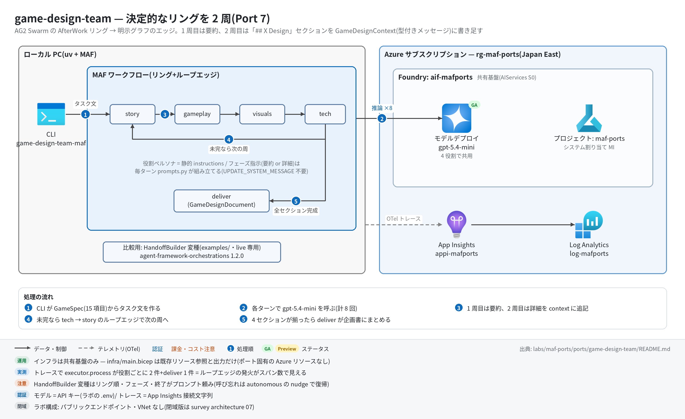

game-design-team 実行ガイド
このページの内容
対象:
labs/maf-ports/ports/game-design-team/(Port 7・パターン: Swarm 型ハンドオフのリング+ループエッジ。比較用に HandoffBuilder 変種あり)
最終確認: 2026-09-29 オフライン(30 passed〈--extra orchestrations込み〉・ruff clean・依存 agent-framework-core 1.19.0 / agent-framework-openai 1.14.4 / agent-framework-orchestrations 1.2.0 / openai 3.20.0)/ ライブ: 2026-07-31(主実装のスモーク 1 passed・54 秒。当時の構成。Azure リソースは削除済み — 再デプロイ手順は §5)
正は本 Markdown。 人間用 HTML(同じディレクトリのrunbook.html)はpython3 labs/tools/build_runbooks.pyで生成する(HTML は直接編集しない)。設計判断と移植の学びは README。
1. このパターンで確かめること
- 4 役割(story → gameplay → visuals → tech)がリングを 2 周し、1 周目は 2〜3 文の要約、2 周目は
## X Designの詳細セクションを書くこと。tech → story のループエッジが 1 回だけ発火し、4 セクションが揃ったらdeliverに抜けること(終了は回数でなくデータ条件)。 - 元アプリの「Swarm ハンドオフ」は委譲先が全部ハードコードで、LLM は一度も委譲先を選んでいない → 明示グラフ(MAF core)で決定的に書けること。共有 context は型付きメッセージで Executor が決定的に書き足す(README 学び 1・3)。
- 同じ協調を HandoffBuilder(agent-framework-orchestrations)に載せると、リング順・フェーズ・終了がプロンプト頼みの確率的な性質になること(README「HandoffBuilder 比較」・学び 5)。選定基準は「委譲先が仕様で決まるならグラフ、会話で決まるなら handoff 基盤」。
2. 構成

| コンポーネント | 役割 | 課金 |
|---|---|---|
MAF Workflow(ローカル、workflow.py) |
RoleExecutor ×4 のリング+tech の switch-case(全セクション完成 → deliver / それ以外 → story) | なし |
| モデルデプロイ gpt-5.4-mini(共有基盤) | 4 役割で共用。1 回の実行で 8 回呼ばれる(要約 4+詳細 4) | トークン従量 |
HandoffBuilder 変種(handoff_variant.py+examples/、live 専用) |
同じ 4 役割を handoff_to_* ツール呼び出しで回す比較実装 |
トークン従量(最低 8 回+nudge ぶん) |
App Insights appi-<baseName>(共有基盤) |
OTel トレースの送信先 | 取り込み量従量(少量) |
本ポート固有の Azure リソースはない(infra/main.bicep は共有基盤の existing 参照と出力だけ)。
3. 前提
| 区分 | 必要なもの | 備考 |
|---|---|---|
| ツール | uv(Python は uv が取得。検証は 3.13) | オフライン実行はこれだけ |
| Azure(ライブのみ) | 共有基盤(infra/shared.bicep)のみ | 課金はモデルのトークンと App Insights の取り込み |
| 権限 | 実行時の認証は API キー(FOUNDRY_API_KEY)なのでデータプレーンの RBAC 付与は不要。デプロイには RG の共同作成者 |
— |
環境変数(labs/maf-ports/.env。雛形は .env.example。ライブ実行時のみ必要。本ポート固有の変数はない):
| 変数 | 用途 | 取得元 |
|---|---|---|
FOUNDRY_OPENAI_V1_ENDPOINT |
モデルの呼び先(https://<foundry>.openai.azure.com/openai/v1) |
shared.bicep / main.bicep の出力 openaiV1Endpoint |
FOUNDRY_MODEL |
モデルのデプロイ名(例: gpt-5.4-mini) |
shared.bicep の出力 modelDeploymentName |
FOUNDRY_API_KEY |
Foundry の API キー | az cognitiveservices account keys list -n aif-<baseName> -g <rg> |
APPLICATIONINSIGHTS_CONNECTION_STRING(任意) |
トレース送信先。未設定ならトレース無効で実行は続く | shared.bicep の出力 appInsightsConnectionString |
4. オフライン実行(Azure 不要・無料)
cd labs/maf-ports/ports/game-design-team
uv sync --extra dev --extra orchestrations # HandoffBuilder 構築テスト用に orchestrations も入れる
uv run pytest # 期待: 30 passed, 1 deselected(ネットワーク不要)
uv run pytest -W error::DeprecationWarning # 期待: 30 passed
uv run ruff check . # 期待: All checks passed!uv sync --extra devだけなら26 passed, 1 skipped(tests/test_handoff_variant.pyがモジュールごと skip)。uv syncは指定しなかった extra をアンインストールするので、使う extra は毎回まとめて指定する。
オフラインテストが固定している主な挙動:
- リングが AfterWork 順に 2 周し、計 8 ターンで終わる(
test_ring_runs_two_laps_in_afterwork_order) - 1 周目は要約指示、2 周目は詳細セクション指示(原文の typo「You task is write」まで踏襲)(
test_first_lap_uses_summary_instruction/test_second_lap_uses_section_instruction/test_section_prompt_contains_original_wording_including_typo) - 先行役割の要約が後続のプロンプトに蓄積され、2 周目は全員が 4 要約を見る(
test_summary_accumulates_into_later_prompts/test_second_lap_prompts_carry_all_four_summaries) - 成果物は役割順の 4 セクション(
test_document_collects_four_sections_in_role_order) - HandoffBuilder の制約: participants は実
Agent限定(scripted fake はTypeError)・全参加者にrequire_per_service_call_history_persistence=True必須(tests/test_handoff_variant.pyの 4 件)
5. ライブ実行(Azure 必要・課金あり)
5.1 デプロイ
# 共有基盤が未作成なら作る(詳細は labs/maf-ports/README.md「実行の前提」)
cd labs/maf-ports
az group create -n rg-maf-ports -l japaneast
az deployment group create -g rg-maf-ports -f infra/shared.bicep \
-p baseName=mafports modelName=gpt-5.4-mini modelVersion=2026-03-17 modelCapacity=10
# モデル名・版は docs/survey/features/02-models.md で現行を確認(上は 2026-09-29 時点の例)
# 本ポートの main.bicep は出力の再掲だけ(リソースを作らない)。.env の値の確認用
cd ports/game-design-team
az deployment group create -g rg-maf-ports -f infra/main.bicep -p baseName=mafports5.2 実行
uv sync --extra dev --extra live
uv run game-design-team-maf # 既定値(Epic fantasy with dragons / RPG / ...)
uv run game-design-team-maf --vibe "Cozy island life" --game-type Simulation \
--mechanics "Crafting,Exploration" --mood "Peaceful" --depth Medium
uv run game-design-team-maf --json > gdd.json # spec+task+summaries+sections
uv run pytest -m live # ライブスモーク(depth=Low で 8 ターン)
# HandoffBuilder 変種(比較検証)
uv sync --extra dev --extra live --extra orchestrations
uv run python examples/handoff_builder_variant.py [--vibe ... --game-type ... --goal ...]期待される出力の例(値は実行ごとに変わる。CLI の書式とテストの期待値から作った形の例):
$ uv run game-design-team-maf
tracing: App Insights 有効
[story] overview: A young dragon-rider must rekindle the ancient flame ...
[gameplay] overview: ...
[visuals] overview: ...
[tech] overview: ...
[story] section done (2140 chars)
[gameplay] section done (2388 chars)
[visuals] section done (1975 chars)
[tech] section done (2203 chars)
# Game Concept ← ここから stdout(Markdown 企画書)
## Story Design
...
## Gameplay Design
...
$ uv run python examples/handoff_builder_variant.py
----- story_agent -----
<要約>
[handoff] story_agent -> gameplay_agent
----- gameplay_agent -----
...
[handoff] visuals_agent -> tech_agent
----- tech_agent -----
## Tech Design ... ← 会話にこの見出しが出たら終了(termination_condition)6. 確認観点
| 確認 | # | 観点 | 確認方法 | 期待結果 |
|---|---|---|---|---|
| 1 | 正常系: 企画書の生成 | uv run game-design-team-maf |
stdout に # Game Concept と ## Story Design / ## Gameplay Design / ## Visuals Design / ## Tech Design がこの順で揃う。終了コード 0 |
|
| 2 | リングとループエッジ | 同じ実行の stderr | overview: が story → gameplay → visuals → tech の順に 4 行、続いて section done が同じ順に 4 行(= tech → story のループエッジが 1 回だけ発火) |
|
| 3 | 共有 context の効き | --game-type Simulation --mechanics "Crafting,Exploration" --json を実行し summaries / sections を読む |
gameplay が story の要約を踏まえ、非戦闘ジャンルで既定の戦闘ループを出さない(tests/eval_dataset.jsonl の観点。合否ラインは設けず観察記録) |
|
| 4 | 異常系: 設定不足 | FOUNDRY_MODEL= uv run game-design-team-maf(空文字は .env で上書きされない) |
error: 環境変数が未設定: FOUNDRY_MODEL(...) が stderr に出て終了コード 2 |
|
| 5 | 観測: トレース | §7 の KQL | executor.process story / gameplay / visuals / tech が各 2 件、executor.process deliver が 1 件、invoke_agent *_agent が計 8 件 |
|
| 6 | パターン固有: HandoffBuilder 変種 | examples/handoff_builder_variant.py を実行し stderr の [handoff] 行を数える |
正常なら [handoff] がリング順に 7 行出て tech の ## Tech Design で止まる。呼び忘れがあると autonomous mode の nudge で余分なターンが入り、要約と詳細の数え方がずれることがある(主実装との差を記録) |
|
| 7 | HandoffBuilder の構築制約(オフライン) | uv run pytest tests/test_handoff_variant.py -v(要 --extra orchestrations) |
4 passed(fake は TypeError、フラグなし Agent は build() で ValueError) |
|
| 8 | コスト・後片付け | 1 回の主実装 = モデル呼び出し 8 回。変種は最低 8 回で、handoff を呼ばない応答が続くと 1 エージェントあたり既定 50 ターンまで autonomous に続く | 変種は 1 回ずつ試す(example は --depth を受けず既定の Low で走る)。使い終わったら §8 |
7. トレース・評価の確認
az monitor app-insights query --app appi-mafports -g rg-maf-ports \
--analytics-query "dependencies | where timestamp > ago(30m) | where name startswith 'executor.process' or name startswith 'invoke_agent' | summarize count() by name | order by name asc"- 期待(主実装 1 回ぶん):
executor.process story2 /executor.process gameplay2 /executor.process visuals2 /executor.process tech2 /executor.process deliver1、invoke_agent story_agent2 など計 8。ループエッジの発火がスパン数にそのまま出るのが本ポートの見どころ。 - HandoffBuilder 変種は
invoke_agent <role>_agentが発話回数ぶん並び、nudge が入った役割だけ 3 件以上になる。 - 評価を回すなら
--jsonのsectionsを役割ごとに Foundry の Task Adherence / Coherence 評価器にかける(README「評価」)。 - 取り込みには数分の遅延がある。0 件なら CLI の最初の行に
tracing: App Insights 有効が出たかを確認。
8. 片付け
az group delete -n rg-maf-ports --yes --no-wait # 本ポート固有のリソースはないので、共有基盤を使い終わったら RG ごと削除9. トラブルシューティング
| 症状 | 原因 | 対処 |
|---|---|---|
26 passed, 1 skipped(could not import 'agent_framework_orchestrations') |
orchestrations extra 未導入 | uv sync --extra dev --extra orchestrations |
uv run pytest で pytest が見つからない |
直前の uv sync で dev extra を指定しなかった(指定外の extra は削除される) |
使う extra をまとめて uv sync --extra dev --extra live --extra orchestrations |
error: 環境変数が未設定: ...(終了コード 2) |
labs/maf-ports/.env が無い / 値が空 |
.env.example をコピーして shared.bicep の出力を転記 |
| 401 / 404(DeploymentNotFound) | API キーの誤り / FOUNDRY_MODEL とデプロイ名の不一致 |
キーを取り直す。デプロイ名は shared.bicep の出力 modelDeploymentName |
RuntimeError: deliver: セクション未完成のまま到達 / 要約もセクションも記入済みの context を受信 |
リングの配線か終了条件を変更して壊した(通常の実行では起きない) | workflow.py の switch-case と all_sections_done() を確認。オフラインテストで再現できる |
変種が [request_info] ユーザー入力要求 — one-shot 実行のため終了 で止まる |
あるエージェントが handoff を呼ばない応答を autonomous の上限(既定 50 ターン)まで続けた | 主実装との差として記録する(プロンプトで呼び出しを促すしかない = 学び 5)。with_autonomous_mode(turn_limits=...) で上限を下げるとコストを抑えられる |
| 変種の出力が細切れに見える | 2026-09-29 より前の example(ストリーミング断片ごとに見出しを出していた) | 最新の examples/handoff_builder_variant.py を使う |
10. 関連・更新履歴
- 設計判断と学び: README(AG2 Swarm → MAF 対応表・HandoffBuilder 比較・Wave 1 handoff 系の総括)
- 協調パターンの分水嶺(グラフ / handoff / agent-as-tool): tech-selection-guide 1-1 / architecture/11 判断フレームワーク
- 関連ポート: research-handoff(Port 3)・services-agency(Port 13)
| 日付 | 内容 |
|---|---|
| 2026-09-29 | 初版(agent-framework-core 1.13→1.19 / orchestrations 1.0.2→1.2.0 / openai 2.51→3.20 に更新、src/ は変更なし。HandoffBuilder 不採用の理由を 1.2.0 で再確認し結論維持。example の表示を修正。図を v2〈日本語+処理順〉に更新) |